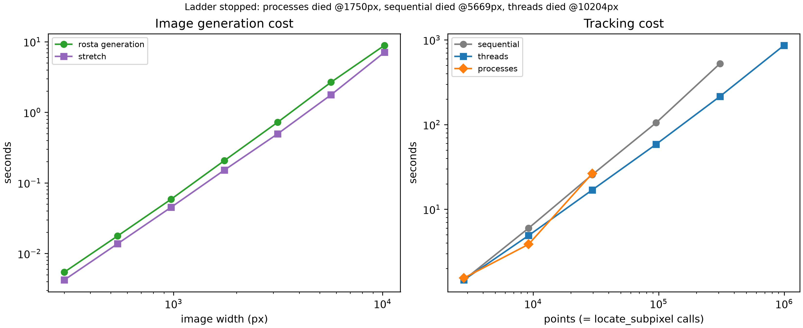

Timing at Scale
High Point Density closed with a question it
didn't answer: how does dictk's tracking time scale as point count
grows? Does that scaling change across sequential, threaded, and
multi-process execution?
Parallelization already measured the bare
phase_cross_correlation primitive. That benchmark ran up to
1,000,000 synthetic calls. But it never ran the real
dictk.grid.locate_subpixel pipeline. And it never used an image large
enough to make "many points" physically real, not just a parameter
sweep.
This page runs that pipeline directly. It grows the reference image until this machine's own limits show up. It reports what actually stopped the ladder, not what was expected to stop it.
Test Machine
Every number on this page depends on the hardware it was measured on. Here is what we used to-date:
- Apple MacBook Pro (14-inch, 2021), model
MacBookPro18,3, Apple M1 Pro chip, 10 cores (8 Performance + 2 Efficiency), 32GB RAM, macOS 26.5.2 (Tahoe).
Same core count as Parallelization's own already-committed benchmark ("measured once on a 10-core machine").
Points, Elements, and Gauss Points
Every point this page tracks feeds directly into
dictk.grid.elements and, from
there, into per-element strain via 2×2 Gauss quadrature
(dictk.element.gauss_points),
the same machinery High Point Density and
Finite Element Method already use.
A regular grid of points gives:
total points. Four points in a cycle make one element, so a grid with points along and along tiles into:
elements. Each axis has one fewer element than points, because every interior point is shared by up to four neighboring elements. Each element carries 4 Gauss points — the standard 2×2 quadrature rule for a Q4 element. So:
As , . So . At high density, four Gauss points exist per point, not per element.
This page's own largest successful tier (5669px, 998×998 points) confirms the asymptote numerically: points, , . That ratio is 3.992 — already within 0.2% of the limiting value of 4.
is also exactly the number of
dictk.grid.locate_subpixel
calls this page's benchmark makes: one correlation per point, not per
element or per Gauss point. That's why point count, not element or
Gauss-point count, is the x-axis variable below.
Growing the Reference Image
Every prior page in this book built its current image the same way. It
started from dictk.image.astronaut,
a fixed 512×512 photograph. When a larger canvas was needed, it
upsampled that photograph with bicubic interpolation
(scipy.ndimage.zoom). Then it added speckle via
dictk.rosta.rosta and combined the
two with combine.
That approach works fine at book scale. But growing the photograph 20x or 100x linearly risks its own artifacts: softened edges, ringing near hard boundaries. Once point counts climb into the millions, those artifacts would be indistinguishable from genuine tracking degradation.
This page drops the photo layer entirely.
rosta generates its speckle pattern
directly, at whatever resolution it's asked for. That speckle is
Gaussian-smoothed thresholded noise. It needs no upsampling step, and
it has no fixed source resolution to run out of.
Real DIC surfaces are speckle-only anyway. The astronaut photograph elsewhere in this book only helps human readers recognize the subregion. The speckle pattern carries the correlation; the photograph does not.
Reference and current images for every tier below are built this way:
reference_image = rosta(width=W, height=W, dot_size=..., smoothness=...)
current_image = stretch(arr=reference_image, factor_x=1.02)
This is the same 2% stretch every prior page in this book has used.
Here it's applied directly to the pure speckle field rosta produced.
One rescaling kept this affordable.
rosta's dot_size and smoothness
parameters set a Gaussian filter's sigma as a fraction of the image,
not a fixed pixel count: dot_size * min(width, height) / 1000.
Leaving dot_size and smoothness fixed while width grows causes a
problem. The speckle dots grow too, in real pixel size. gaussian_filter's
own cost grows with sigma. So total generation cost grows cubically
with image width.
A direct measurement confirms this. At 10,000×10,000 pixels,
generation took 34.2s using the 300px-tuned defaults. Rescaling
dot_size and smoothness by the same factor the image grew cut that
time to 8.2s.
Every tier on this page applies that rescaling. rosta_params_for (in
the script below) divides dot_size and smoothness by the image's
growth factor. This keeps the speckle dot's real pixel size constant.
Generation cost then stays close to linear in image size.
Finding the Ceiling
timing_at_scale_bench.py (full source
below) runs a geometric ladder of image widths: 300, 540, 972, 1750,
3149, 5669, 10204px — each step ×1.8 larger than the last, starting
from High Point Density's own 300px
baseline. At each size, it times sequential, threaded, and
process-pool execution of dictk.grid.locate_subpixel across the
resulting point grid.
Tracking geometry matches High Point Density
directly: kernel_margin=13, upsample_factor=100. search_margin
cannot stay fixed the way it did there, though. At a constant
factor_x=1.02, maximum displacement grows with the image itself
(max_x * 0.02). A fixed margin tuned for a 300px image would
silently undershoot the true displacement at every larger tier. So
each tier computes its own margin from its own maximum displacement
instead.
That makes the two halves of the geometry behave differently across
the ladder. Here is what each tier actually tracks, read directly from
grid_params in the script below:
| Width (px) | Points | Kernel | Search area | Max displacement |
|---|---|---|---|---|
| 300 | 2,809 | 26x26 | 48x48 | 5.6px |
| 540 | 9,216 | 26x26 | 58x58 | 10.1px |
| 972 | 29,584 | 26x26 | 74x74 | 18.3px |
| 1750 | 95,481 | 26x26 | 102x102 | 32.9px |
| 3149 | 308,025 | 26x26 | 156x156 | 59.2px |
| 5669 | 996,004 | 26x26 | 250x250 | 106.5px |
| 10204 | 3,229,209 | 26x26 | 420x420 | 191.8px |
The kernel is fixed. Every tier correlates the same 26x26 pixels. The search area is not fixed. It grows from 48x48 to 420x420, because the displacement it has to contain grows with the image. That is 76 times more search pixels at the top of the ladder than at the bottom.
So the tracking curve below is not a pure point-count curve. Point count and per-correlation size grow together, and the plot's x-axis only shows the first of the two. This doesn't affect any comparison between executors — all three see identical geometry at every tier — but it does explain part of how steeply the curve climbs.
Each (width, executor) combination runs in its own isolated
subprocess, with its own 1800-second (30-minute) wall-clock budget. A controlling
loop launches each one; nothing runs in-process. Deliberately pushing
a laptop toward a resource limit is not something to do inside the
same process that's also tracking the result.
macOS doesn't reliably raise a catchable MemoryError the way Linux
does. A runaway allocation can instead thrash the whole machine
through heavy swapping. Or the kernel can SIGKILL the process outright,
with no Python exception to catch. Subprocess isolation contains
either outcome to one measurement. It never takes down the whole run.
This sweep takes hours, not minutes, and is expected to end in a deliberate failure. Its results were measured once, and committed alongside the script that produced them:
| Width (px) | Points | Sequential | Threads | Processes |
|---|---|---|---|---|
| 300 | 2,809 | 1.5s | 1.5s | 1.5s |
| 540 | 9,216 | 6.0s | 4.9s | 3.9s |
| 972 | 29,584 | 25.6s | 16.9s | 26.5s |
| 1750 | 95,481 | 105.1s | 58.6s | crashed |
| 3149 | 308,025 | 525.1s | 215.2s | — |
| 5669 | 996,004 | timeout (1800s) | 861.5s | — |
| 10204 | 3,229,209 | — | timeout (1800s) | — |

rosta generation and stretch both scale smoothly with image width, confirming the dot-size rescaling above kept generation cost from going cubic. Right: tracking cost vs. point count for all three executors. Every series ends where its own executor died — not at a common point count, and not at a common image size.Threads pull ahead as point count grows, and by a widening margin. At 300px, threads and sequential run a statistical tie (0.999x) — 2,809 points isn't enough yet to amortize thread scheduling overhead. That margin grows: 1.5x at 972px, 1.8x at 1750px, 2.4x at 3149px.
This matches Parallelization's own "many points, moderate-to-large correlations" regime. That's exactly where this pipeline sits once point counts climb past a few thousand.
Where It Breaks
None of the three executors died to memory pressure. This page checked
sysctl vm.swapusage directly, polling it roughly every 30 seconds
throughout the entire multi-hour run, watching for the moment used
became nonzero. It never did — not once, at any tier, for any
executor.
Peak resident set size (ru_maxrss, sampled after every stage) topped
out at 11.5GB. That peak came from stretch alone, at the final
10204px tier — barely a third of this machine's 32GB. Every executor
died for its own reason. None of those reasons was RAM.
processes died first, at 1750px. The cause is a real architectural
bottleneck, not a resource limit. It's already the slowest of the
three by 972px: 26.5s, versus sequential's own 25.6s. That's worse
than doing nothing extra — a full tier before its final failure.
The cause is visible directly in
dictk.grid.locate's own source. It
binds reference_image/current_image into a partial once. Then it
hands that partial to ProcessPoolExecutor.map():
worker = partial(
_locate_worker,
reference_image=reference_image,
current_image=current_image,
...
)
with executor_cls(max_workers=max_workers) as pool:
return list(pool.map(worker, zip(reference_points, search_centers)))
ProcessPoolExecutor.map() re-pickles that bound callable once per
task, not once per worker. The image arrays get re-pickled too, every
time. At a few hundred points and a 300px image, that cost is trivial.
At tens of thousands of points and a multi-megapixel image, it isn't:
the main process spends more time serializing the same large array
over and over than any worker spends computing.
A retry at 1750px, under this page's own raised 1800-second (30-minute) budget, confirmed this directly. CPU utilization held around 50% of one core. That's a process bottlenecked on serialization, not eight processes computing in parallel. It showed no sign of finishing soon, so this page stopped it deliberately, once the cause was understood — running it to exhaustion would only have proven a point already proven.
This is a real, unfixed limitation in dictk itself. It's named here
rather than patched, the same precedent High Point
Density set for
its own strain-window-averaging finding.
sequential and threads both died to this script's own
1800-second (30-minute) timeout. That's a compute-time wall, not a memory one.
sequential reached 3149px: 308,025 points, 525.1s. Its next tier,
5669px, then ran out the full budget.
threads went one tier further. It completed that same 5669px tier
successfully — 996,004 points, 861.5s, with healthy ~6-8x realized
parallelism visible in top-level CPU usage throughout. It then also
ran out the 1800-second (30-minute) budget at the next tier, 10204px (3,229,209
points). Extrapolating past its own last measured scaling trend, that
tier needed roughly an hour of work — about twice the budget.
Both failures were checked directly, not assumed. CPU usage stayed high, and RSS stayed well under the machine's ceiling, for the entire lifetime of each failed run. These are legitimate long computations that simply outran their own budget. None of them hung, leaked, or crashed.
The honest finding, stated plainly: on this machine, with this pipeline, compute time is the wall this ladder actually hit. Memory never became a constraint — at least not up to the roughly one million points this ladder successfully tracked.
Path Forward's GPU direction has been gated on "a
documented CPU bottleneck" since it was first written. This page
documents one, with real numbers. A real DIC problem at
finite-element-mesh scale needs at least a billion correlations, per
that same page's own north star. Reaching a million took threads
14.4 minutes on 10 cores. A billion points is 1000x that. Extrapolating
threads's own measured rate straight-line to that scale lands at
about 1.4 weeks (≈240 hours) — far past this page's own 30-minute
per-tier budget. No amount of additional CPU-side tuning closes a gap
that size on its own.
timing_at_scale_bench.py
"""Timing at Scale: push High Point Density's own tracking pipeline --
real dictk.grid.locate_subpixel, not the bare phase_cross_correlation
primitive parallelization_bench.py benchmarks -- up a geometric ladder
of point counts on this machine (Apple M1 Pro, 32GB RAM, 10 cores --
see timing_at_scale.md's own Test Machine section), looking for its
real ceiling. The ladder set out looking for a genuine memory wall; the
actual result (see timing_at_scale.md's own Where It Breaks section) is
that every executor died to this script's own TIMEOUT_S first, with
`vm.swapusage` reporting 0.00M used at every tier attempted -- a
compute-time ceiling, not a memory one, at least up to the sizes this
ladder reached.
Not part of the dictk package -- a standalone, one-time measurement
script, matching parallelization_bench.py's own precedent. Its output
(timing_at_scale_bench.csv, timing_at_scale_bench.png) is committed
alongside it rather than regenerated on every book build -- the full
ladder takes many minutes and is expected to end in a deliberate
failure, neither of which fits the live cmdrun re-execution every other
figure in this book uses.
Safety architecture (read before changing the ladder): macOS does not
reliably raise a catchable MemoryError the way Linux does -- a runaway
allocation can instead thrash the whole machine (heavy swapping, not
just this script) or get SIGKILLed by the kernel outright, with no
Python exception to catch. Each (width, executor) combination therefore
runs as its OWN ISOLATED SUBPROCESS with its OWN wall-clock timeout,
launched by the controller at the bottom of this file, never in-process
and never sharing a timeout budget with another executor. A first
version of this script ran all three executors inside one shared-budget
subprocess per width; at width=1750 the `processes` run got starved of
the remaining budget after `sequential` and `threads` had already used
most of it, and was killed by the timeout -- a real bug in the harness,
not a memory finding, caught by watching the run live rather than
trusting it unattended. Splitting each executor into its own subprocess
fixes that, and also lets each executor's own ladder stop independently
once *it* fails, rather than one executor's failure cutting off
measurements for the other two at the same size.
The core measurement (rosta generation, stretch, and locate_subpixel)
works entirely on in-memory numpy arrays -- no PNG is written or read
back during the ladder itself, so Pillow's own DecompressionBombError (a
safety default, not a hardware limit, documented separately on the page)
never becomes a confound in the RAM-limit story this script exists to
tell.
Must be a real module, not `python3 -c` -- ProcessPoolExecutor needs a
real, importable, top-level function to hand to spawned workers, the
same constraint dictk.grid._locate_worker exists for.
Re-run with: python3 timing_at_scale_bench.py
Re-run a single (width, executor) tier directly (e.g. to retry after
tuning something):
python3 timing_at_scale_bench.py --worker 3000 threads
"""
import csv
import os
import resource
import subprocess
import sys
import time
from pathlib import Path
import matplotlib.pyplot as plt
import numpy as np
from dictk.grid import Executor, generate, locate_subpixel
from dictk.image import PixelCoordinate, stretch
from dictk.rosta import rosta
CSV_PATH = Path(__file__).parent / "timing_at_scale_bench.csv"
PNG_PATH = Path(__file__).parent / "timing_at_scale_bench.png"
WORKERS = os.cpu_count()
# Same tracking geometry High Point Density (9.2) established --
# kernel_margin=13, upsample_factor=100 -- except search_margin, which
# cannot stay fixed here: factor_x=1.02 means max displacement grows
# with the image itself (~0.02 * width), and 9.2's own fixed 25px
# search margin (tuned for a 300px image, max displacement ~5.6px)
# would silently undershoot the true displacement at any larger tier.
KERNEL_MARGIN = 13
FACTOR_X = 1.02
UPSAMPLE_FACTOR = 100
SEARCH_BUFFER = 5 # extra px of headroom beyond the max displacement
# Origin as a fraction of image width, matching 9.2's own origin=18 on
# a 300px image (18/300 = 0.06) -- keeps the grid's own margin
# proportionally identical at every tier.
ORIGIN_FRACTION = 18 / 300
SPACING = 5
# rosta()'s own defaults (dot_size=4.0, smoothness=2.0) are tuned for a
# 300px image -- see rosta_params_for's own docstring for why they must
# shrink as width grows, not stay fixed.
BASE_WIDTH = 300
BASE_DOT_SIZE = 4.0
BASE_SMOOTHNESS = 2.0
DENSITY = 0.5 # resolution-independent, matches the rest of the book
EXECUTOR_KWARGS = {
"sequential": dict(max_workers=None),
"threads": dict(max_workers=WORKERS, executor=Executor.THREAD),
"processes": dict(max_workers=WORKERS, executor=Executor.PROCESS),
}
TIMEOUT_S = 1800 # per (width, executor) wall-clock budget
# Started at 240s. Raised after the first real run showed sequential and
# processes both dying to that budget (at 1750px and 3149px) well before
# any genuine memory pressure -- their own per-call FFT cost, not RAM, was
# the binding constraint at 240s. Even at 1800s, every executor still
# died to this same budget rather than to memory -- sequential at 5669px,
# threads at 10204px, both with peak RSS under 12GB out of 32GB available
# and zero swap used throughout. Compute time, not RAM, is the real
# ceiling this ladder found; see timing_at_scale.md for the full story.
def grid_params(width: int) -> tuple[int, int, int]:
"""Origin, point count, and search margin for a square width x width
tier, holding the grid's own relative geometry constant across the
ladder. Returns (origin, count, search_margin_px)."""
origin = round(ORIGIN_FRACTION * width)
count = (width - 2 * origin) // SPACING + 1
max_x = origin + (count - 1) * SPACING
max_displacement = max_x * (FACTOR_X - 1.0)
search_margin = KERNEL_MARGIN + int(np.ceil(max_displacement)) + SEARCH_BUFFER
return origin, count, search_margin
def rosta_params_for(width: int) -> tuple[float, float]:
"""dot_size/smoothness rescaled to hold the speckle dot's own real
pixel size constant as width grows.
rosta_pattern computes its Gaussian sigmas as
`dot_size * min(width, height) / 1000`, so dot_size/smoothness left
fixed while width grows makes the dots themselves grow proportionally
larger in pixels -- and gaussian_filter's own cost then grows with
sigma, pushing total cost cubic in linear size (measured: 34.2s vs.
8.2s at 10000x10000, unscaled vs. rescaled). Dividing by the same
factor width grew by holds the sigma, and the cost, close to linear.
"""
factor = width / BASE_WIDTH
return BASE_DOT_SIZE / factor, BASE_SMOOTHNESS / factor
def _peak_rss_gb() -> float:
"""Peak resident set size so far, in GB. macOS reports ru_maxrss in
bytes; Linux reports it in KB -- this module only ever runs on the
former (see the module docstring's own Test Machine reference), so
no platform branch is needed here."""
return resource.getrusage(resource.RUSAGE_SELF).ru_maxrss / 1e9
def _append_row(
*, width: int, points: int, stage: str, seconds: float, peak_rss_gb: float
) -> None:
"""Appends and flushes one CSV row immediately -- not batched -- so a
later crash in this same worker process loses nothing already
measured."""
is_new = not CSV_PATH.exists()
with open(CSV_PATH, "a", newline="") as f:
writer = csv.writer(f)
if is_new:
writer.writerow(["width", "points", "stage", "seconds", "peak_rss_gb"])
writer.writerow([width, points, stage, f"{seconds:.6f}", f"{peak_rss_gb:.4f}"])
f.flush()
os.fsync(f.fileno())
def run_tier(width: int, executor_name: str) -> None:
"""Runs one (width, executor) tier -- image generation, stretch, then
one locate_subpixel call under the named executor -- appending one
CSV row per completed stage as it goes. Exits nonzero (uncaught
exception) on any real failure; the controller subprocess treats
that, or a timeout, as this executor's own hard stopping point at
this size."""
dot_size, smoothness = rosta_params_for(width)
t0 = time.perf_counter()
reference_image = rosta(
width=width,
height=width,
dot_size=dot_size,
smoothness=smoothness,
density=DENSITY,
)
_append_row(
width=width,
points=0,
stage="rosta",
seconds=time.perf_counter() - t0,
peak_rss_gb=_peak_rss_gb(),
)
t0 = time.perf_counter()
current_image = stretch(arr=reference_image, factor_x=FACTOR_X)
_append_row(
width=width,
points=0,
stage="stretch",
seconds=time.perf_counter() - t0,
peak_rss_gb=_peak_rss_gb(),
)
origin, count, search_margin = grid_params(width)
points = generate(
origin=PixelCoordinate(x=origin, y=origin),
count_x=count,
count_y=count,
spacing_x=SPACING,
spacing_y=SPACING,
)
z = count * count
t0 = time.perf_counter()
found = locate_subpixel(
reference_image=reference_image,
current_image=current_image,
reference_points=points,
kernel_margin_width=KERNEL_MARGIN,
kernel_margin_height=KERNEL_MARGIN,
search_margin_width=search_margin,
search_margin_height=search_margin,
upsample_factor=UPSAMPLE_FACTOR,
**EXECUTOR_KWARGS[executor_name],
)
elapsed = time.perf_counter() - t0
_append_row(
width=width,
points=z,
stage=executor_name,
seconds=elapsed,
peak_rss_gb=_peak_rss_gb(),
)
# Cheap correctness spot-check -- sampled, not exhaustive, since z can
# be in the millions. A wrong search_margin at this tier shows up
# here before it shows up as a confusing shape in the timing plot.
true_x = [p.x * FACTOR_X for p in points]
sample = np.random.default_rng(0).choice(
len(points), size=min(50, len(points)), replace=False
)
max_err = max(abs(found[i].x - true_x[i]) for i in sample)
if max_err > 1.0:
print(
f"WARNING width={width} executor={executor_name}: sampled max "
f"tracking error {max_err:.2f}px -- search_margin may be too "
"small at this tier",
file=sys.stderr,
)
def _widths() -> list[int]:
"""Geometric ladder starting at 9.2's own 300px baseline, x1.8 per
step, up to a size comfortably past where the machine is expected to
fail -- the controller stops for real once a tier actually does.
1.8 is a practical choice, not a tuned constant -- it gives enough
tiers to see the timing trend on a log-log plot without a step so
fine the ladder takes unreasonably long to reach the interesting
region. No evidence ties any finding on this page to this specific
ratio rather than some other nearby one."""
widths = []
w = float(BASE_WIDTH)
while w < 60_000:
widths.append(round(w))
w *= 1.8
return widths
def _resume_plan() -> dict[str, int | None]:
"""Reads the existing CSV (if any) to decide, per executor, which
width to resume the ladder at. A width that previously failed via
timeout gets retried (a larger TIMEOUT_S might let it succeed now);
widths already measured successfully are skipped; a real crash
(non-timeout failure) marks that executor permanently dead (`None`)
-- retrying it would just reproduce the same crash."""
if not CSV_PATH.exists():
return dict.fromkeys(EXECUTOR_KWARGS, BASE_WIDTH)
with open(CSV_PATH) as f:
rows = list(csv.DictReader(f))
status: dict[str, dict[int, str]] = {name: {} for name in EXECUTOR_KWARGS}
for r in rows:
width = int(r["width"])
stage = r["stage"]
if stage in EXECUTOR_KWARGS:
status[stage][width] = "success"
elif stage.startswith("FAILED_timeout_"):
name = stage.removeprefix("FAILED_timeout_")
if name in status:
status[name].setdefault(width, "timeout")
elif stage.startswith("FAILED_returncode_"):
name = stage.rsplit("_", 1)[-1]
if name in status:
status[name][width] = "crash"
plan: dict[str, int | None] = {}
for name in EXECUTOR_KWARGS:
resume_width: int | None = None
for width in _widths():
s = status[name].get(width)
if s == "success":
continue
resume_width = None if s == "crash" else width
break
plan[name] = resume_width
return plan
def run_ladder() -> None:
resume_at = _resume_plan()
alive = {name: (resume_at[name] is not None) for name in EXECUTOR_KWARGS}
print(f"Resuming: {resume_at}")
for width in _widths():
if not any(alive.values()):
break
print(f"--- width={width} (alive: {[k for k, v in alive.items() if v]}) ---")
for executor_name in EXECUTOR_KWARGS:
if not alive[executor_name]:
continue
if width < resume_at[executor_name]:
print(f" {executor_name}: already measured, skipping")
continue
try:
result = subprocess.run(
[sys.executable, __file__, "--worker", str(width), executor_name],
timeout=TIMEOUT_S,
capture_output=True,
text=True,
)
except subprocess.TimeoutExpired:
print(f" {executor_name}: TIMED OUT after {TIMEOUT_S}s")
_append_row(
width=width,
points=0,
stage=f"FAILED_timeout_{executor_name}",
seconds=float("nan"),
peak_rss_gb=float("nan"),
)
alive[executor_name] = False
continue
if result.returncode != 0:
print(f" {executor_name}: FAILED (returncode={result.returncode})")
print(result.stderr[-1000:])
_append_row(
width=width,
points=0,
stage=f"FAILED_returncode_{result.returncode}_{executor_name}",
seconds=float("nan"),
peak_rss_gb=float("nan"),
)
alive[executor_name] = False
continue
print(f" {executor_name}: ok")
if result.stderr.strip():
print(f" {executor_name} stderr: {result.stderr.strip()[-500:]}")
print(f"Wrote {CSV_PATH}")
def plot_summary() -> None:
with open(CSV_PATH) as f:
rows = list(csv.DictReader(f))
fig, (ax_gen, ax_track) = plt.subplots(
1, 2, figsize=(11, 4.5), constrained_layout=True
)
for stage, color, marker, label in [
("rosta", "tab:green", "o", "rosta generation"),
("stretch", "tab:purple", "s", "stretch"),
]:
by_width: dict[int, list[float]] = {}
for r in rows:
if r["stage"] == stage:
by_width.setdefault(int(r["width"]), []).append(float(r["seconds"]))
xs = sorted(by_width)
ys = [float(np.mean(by_width[w])) for w in xs]
ax_gen.plot(xs, ys, marker=marker, color=color, label=label)
ax_gen.set_xscale("log")
ax_gen.set_yscale("log")
ax_gen.set_xlabel("image width (px)")
ax_gen.set_ylabel("seconds")
ax_gen.set_title("Image generation cost")
ax_gen.legend(fontsize=8)
for stage, color, marker in [
("sequential", "tab:gray", "o"),
("threads", "tab:blue", "s"),
("processes", "tab:orange", "D"),
]:
xs = [int(r["points"]) for r in rows if r["stage"] == stage]
ys = [float(r["seconds"]) for r in rows if r["stage"] == stage]
ax_track.plot(xs, ys, marker=marker, color=color, label=stage)
ax_track.set_xscale("log")
ax_track.set_yscale("log")
ax_track.set_xlabel("points (= locate_subpixel calls)")
ax_track.set_ylabel("seconds")
ax_track.set_title("Tracking cost")
ax_track.legend(fontsize=8)
# Only report an executor as dead if nothing later in the CSV shows it
# succeeding at that width or beyond -- a retry after TIMEOUT_S was
# raised can turn an earlier "FAILED_timeout" row into a stale one.
final_max_success = {
name: max((int(r["width"]) for r in rows if r["stage"] == name), default=-1)
for name in EXECUTOR_KWARGS
}
still_dead = [
r
for r in rows
if r["stage"].startswith("FAILED")
and int(r["width"]) > final_max_success.get(r["stage"].rsplit("_", 1)[-1], -1)
]
if still_dead:
# Collapse to one entry per executor -- a width can appear twice
# (e.g. timed out, then crashed on a later retry at the same
# width); the last one in file order is the final word on that
# executor's fate.
by_executor: dict[str, dict] = {}
for r in still_dead:
name = r["stage"].rsplit("_", 1)[-1]
by_executor[name] = r
summary = ", ".join(
f"{name} died @{r['width']}px" for name, r in by_executor.items()
)
fig.suptitle(f"Ladder stopped: {summary}", fontsize=9, wrap=True)
fig.savefig(PNG_PATH, dpi=300)
plt.close(fig)
print(f"Wrote {PNG_PATH}")
if __name__ == "__main__":
if len(sys.argv) == 4 and sys.argv[1] == "--worker":
run_tier(int(sys.argv[2]), sys.argv[3])
else:
run_ladder()
plot_summary()